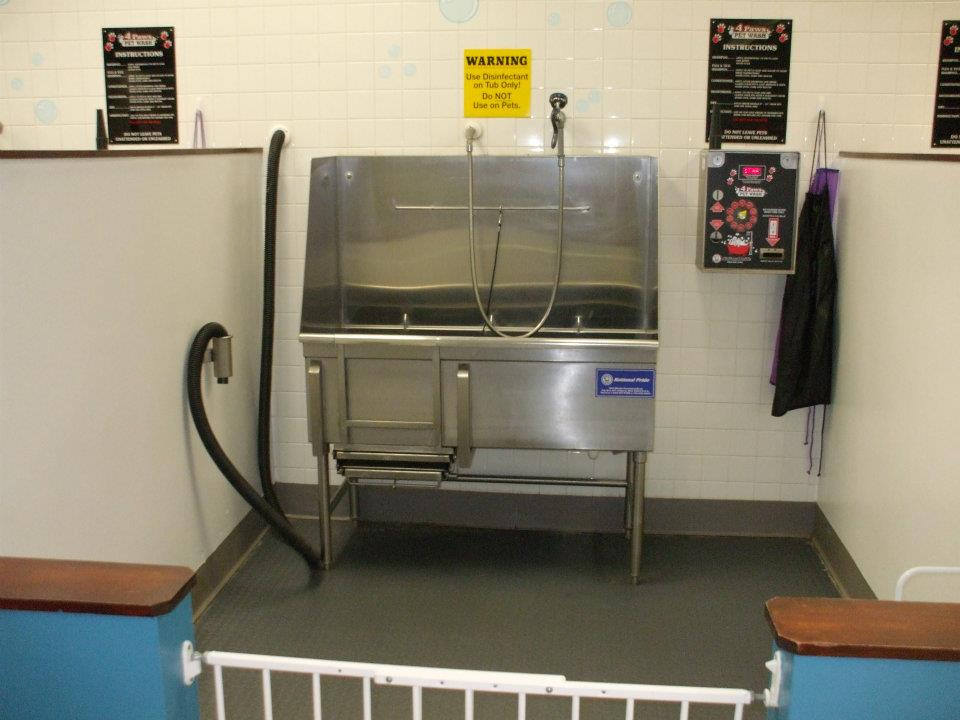

Got Questions? We’ve Got Answers!
Frequently Asked Questions
Do I need an appointment to use the self-serve wash?
Nope! Our wash stations are walk-in only.
How much does the self-serve wash cost?
Each token is $5 and gives you 7 minutes of wash and dry time. We can help estimate how many you’ll need!
What supplies are included?
We provide temperature-controlled water, tearless shampoo, conditioner, flea & tick shampoo, deodorizer, and a dryer — all included in your wash time!
Can I bring my own shampoo and washing products?
Yes! You're welcome to bring your own products.
Do you offer full-service grooming?
Yes!Give us a call and we’ll give you a quote based on your dog’s breed and size.
What if I run out of time after purchasing tokens?
You can always add more tokens to continue washing or drying your pet. We can help you plan the right amount before you start.
